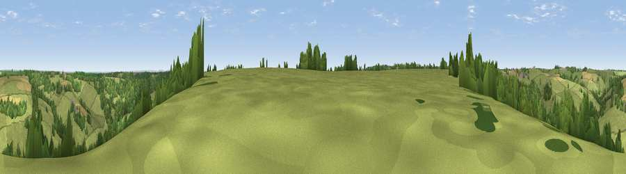

Viewpoint near Swainswick
#25624 in England · top 41% of its area beats it · near Swainswick · path 163 mWhere it is
The exact computed spot (ST 76425 70475). Click the marker for map links.
Public access: the nearest public right of way is about 163 m away — the final stretch may cross private land. Computed from Natural England's CRoW access layer and OpenStreetMap rights of way — not the legal definitive map. Always verify locally.
The view, rendered

A 360° render of this exact spot computed from the terrain model, tree cover and land cover — summer colours, afternoon light, calibrated against photographs of famous viewpoints. Real trees, hedges and buildings will differ in detail.
The panorama
Grey silhouette: terrain skyline in each direction (720 bearings, Earth curvature and refraction included). Dashed green: skyline with trees (+15 m) and buildings (+8 m) as obstacles. Blue strip: how far the ground is visible on each bearing.
Where the view opens
Wedge length = distance to the farthest visible ground on that bearing (vegetation-aware). Rings at 10, 25 and 50 km.
What fills the view
67% grassland · 26% woodland · 7% cropland
Angular shares of the visible panorama (visual magnitude), not map area. Landscape diversity 0.37 (0–1 Shannon).
Key numbers
More beautiful places nearby
The staircase of upgrades: each row has a higher view potential than everything closer. Driving times are estimates from straight-line distance, calibrated against real road routing — check an actual route before setting out.
| Place | Direction | Drive | Score |
|---|---|---|---|
| Viewpoint near Marshfield | NW · 2 km | ~5 min | 50.0 |
| Viewpoint near Marshfield | NNW · 2 km | ~6 min | 56.6 |
| Viewpoint near Doynton | NW · 4 km | ~10 min | 62.9 |
| Hanging Hill | W · 5 km | ~11 min | 76.4 |
| Cley Hill | SSE · 27 km | ~43 min | 76.8 |
| Viewpoint near Stinchcombe | N · 28 km | ~44 min | 80.5 |
| Nottingham Hill | NNE · 62 km | ~84 min | 80.9 |
| Garway Hill | NNW · 64 km | ~86 min | 84.6 |
51.43278, -2.34052 · source: screening · position refined by local search. Computed location — check access rights before visiting.